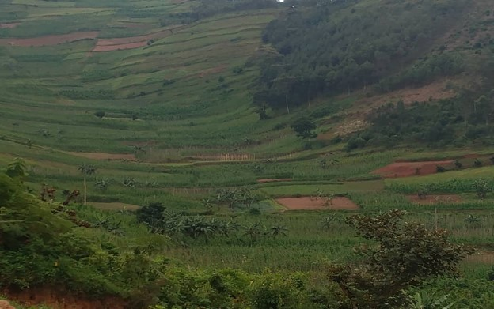
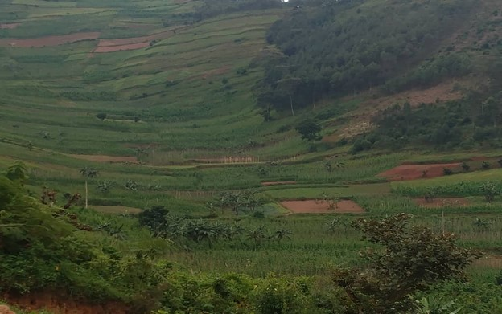

We are in the process of creating sustainable agriculture that plays a vital role in improving food supplies while conserving natural land resources. BIWODA is adopting methods that nurture the soil and enhance biodiversity so that rural communities can sustain their livelihoods and maintain the land for future generations.
Conservation agriculture is slowly replacing traditional farming practices that deplete the soil and harm pollinators with eco-friendly, land-preserving methods. BIWODA women plan to adopt composting and use natural manure to improve soil quality, crop rotation and cover crops to restore soil health and avoid harmful pesticides to protect bees, which pollinate 80% of crops. This will have an Impact on Land Conservation as it restores and enhances soil fertility, preserves biodiversity, supports higher crop yields, and prevents harmful chemical runoff, keeping land and water sources healthy.